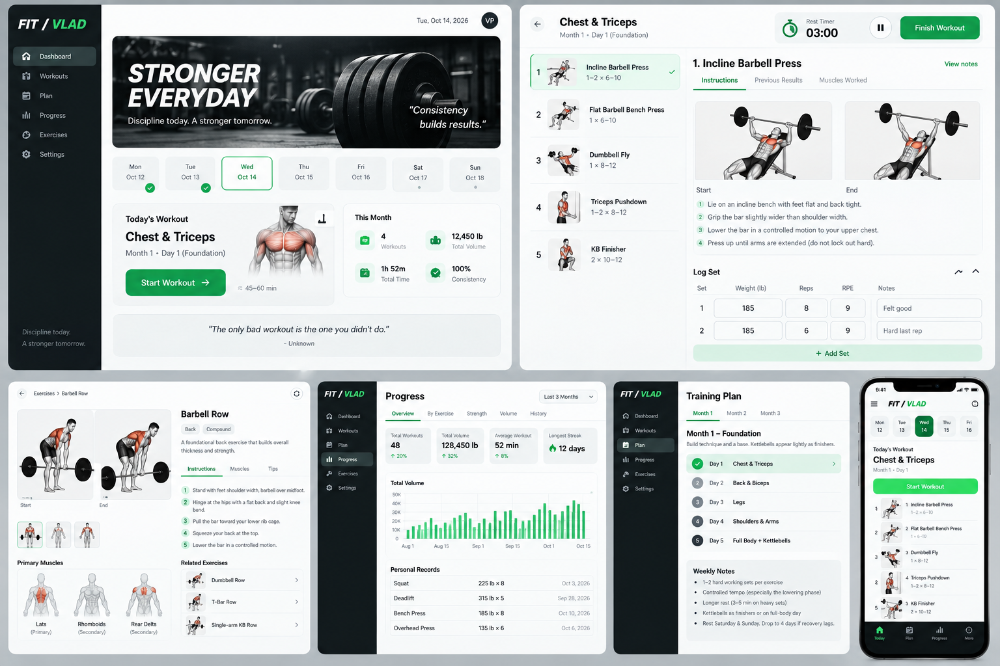

FIT / VLAD asset reviewFIT / VLAD asset review
Design reference, banner, app icons, and 38 draft exercise variants.
Technical handoff · Asset prompts and manifest
Primary design reference

Exercise draft sheets
These images need technique review. They are not ready to serve as verified exercise instructions. See the asset guide for specific review points.